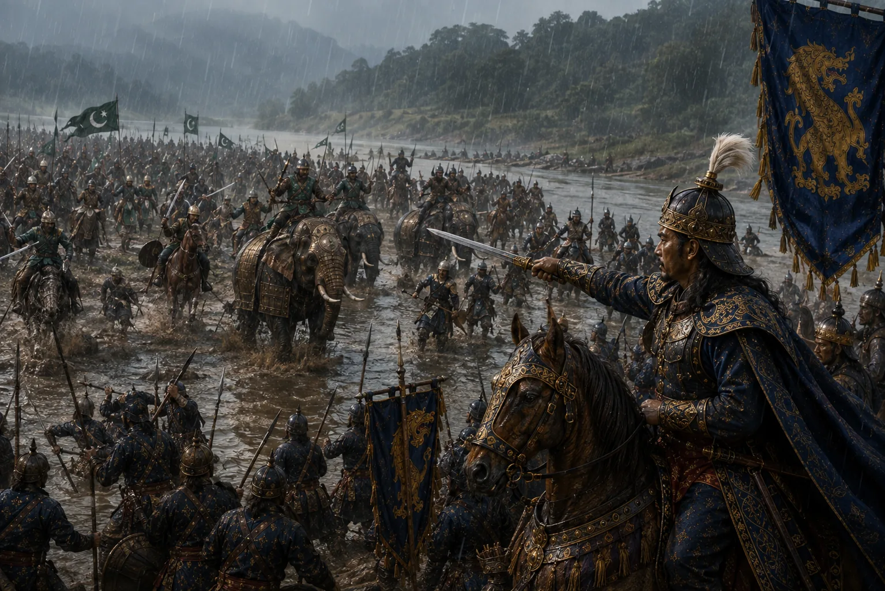

The Great Invasion of Commander Turbak
1532 · Swarganarayan’s kingdom

General Turbak invades Assam with a large Gaur army armed with muskets, heavy cannons, and cavalry.
Sources have not yet been catalogued for this record.
People: Konseng Barpatragohain, Suhungmung (Swarganarayan), Turbak